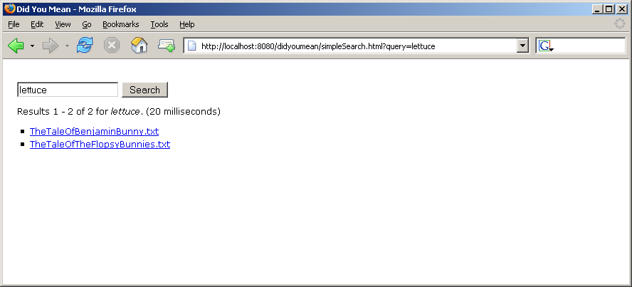
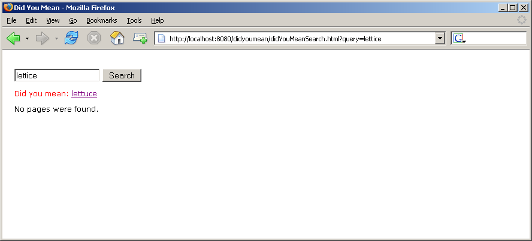
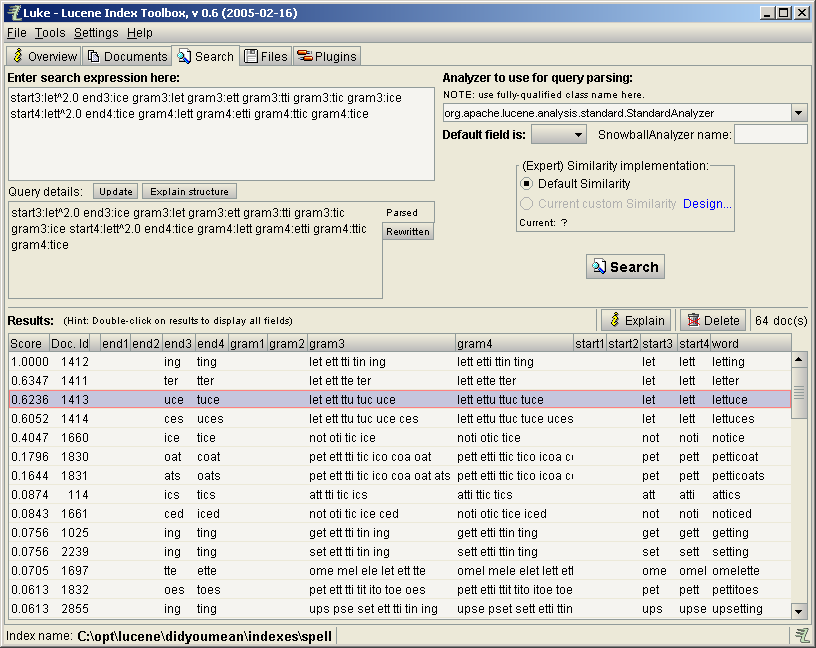
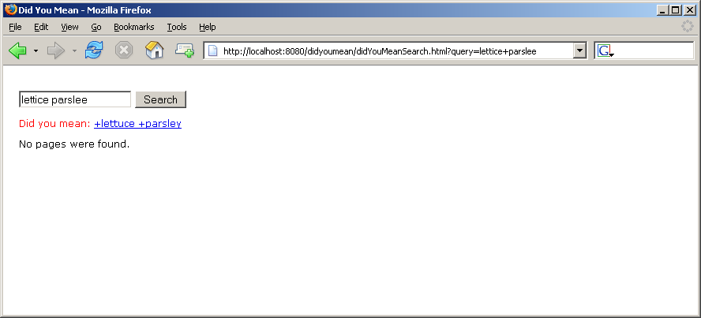

by Tom White
All modern search engines attempt to detect and correct spelling errors in users' search queries. Google, for example, was one of the first to offer such a facility, and today we barely notice when we are asked Did you mean x after a slip on the keyboard. This article shows you one way of adding a "did you mean" suggestion facility to your own search applications using the Lucene Spell Checker, an extension written by Nicolas Maisonneuve and David Spencer.
Automatic spell checking has a long history. One important early paper was F. Damerau's A technique for computer detection and correction of spelling errors published in 1964, which introduced the idea of minimum edit distance. Briefly, the concept of edit distance quantifies the idea of one string being "close" to another, by counting the number of character edit operations such as insertions, deletions and substitutions that are needed to transform one string into the other. Using this metric, the best suggestions to a misspelling are those with the minimum edit distance.
Another approach is the similarity key technique, in which words are transformed into some sort of key so that similarly spelled and, hopefully, misspelled words have the same key. To correct a misspelling simply involves creating the key for the misspelling and looking up dictionary words with the same key for a list of suggestions. Soundex is the best known similarity key, and is often used for phonetic applications.
A combination of minimum edit distance and similarity keys (metaphone) is at the heart of the successful strategy used by Aspell, the leading open-source spell checker. However, it is a third approach that underlies the implementation of "did you mean" technique described in this article: letter n-grams.
A letter n-gram is a sequence of n letters of a word. For instance, the word "lucene" can be divided into four 3-grams, also known as trigrams: "luc", "uce", "cen", and "ene". Why is it useful to break words up like this? The intuition is that misspellings typically only affect a few of the constituent n-grams, so we can recognise the intended word just by looking amongst correctly spelled words for those that share a high proportion of n-grams with the misspelled word. There are various ways of computing this similarity measure, but one powerful way is to treat it as a classic search engine problem with an inverted index of n-grams into words. This is precisely the approach taken by Lucene Spell Checker. Let's see how to use it.
We'll first build a very simple search interface that does not include the "did you mean" facility. It defines a single method that takes a search query string and returns a search result.
package org.tiling.didyoumean;
import java.io.IOException;
import org.apache.lucene.queryParser.ParseException;
public interface SearchEngine {
public SearchResult search(String queryString) throws IOException, ParseException;
}
The search result is a SearchResult object which is a JavaBean that exposes a list of hits (actually just the top hits for simplicity), and a few other properties. I have omitted the constructor and getters in the listing here as they are boilerplate code. (The full source code is available in the accompanying download - see References at the end of the article.)
package org.tiling.didyoumean;
import java.util.List;
public class SearchResult {
private List topHits;
private int totalHitCount;
private long searchDuration;
private String originalQuery;
private String suggestedQuery;
}
Here's a very simple implementation of SearchEngine built with Lucene. It uses Lucene's
QueryParser to parse the search query string into
a Query that is then used to perform the search.
The Lucene Hits object is then mapped to an instance of our SearchResult class.
package org.tiling.didyoumean;
import java.io.IOException;
import java.util.ArrayList;
import java.util.List;
import org.apache.lucene.analysis.standard.StandardAnalyzer;
import org.apache.lucene.queryParser.ParseException;
import org.apache.lucene.queryParser.QueryParser;
import org.apache.lucene.search.Hits;
import org.apache.lucene.search.IndexSearcher;
import org.apache.lucene.search.Query;
import org.apache.lucene.store.Directory;
public class SimpleSearchEngine implements SearchEngine {
private String defaultField;
private String nameField;
private Directory originalIndexDirectory;
private int maxHits;
public SimpleSearchEngine(String defaultField, String nameField,
Directory originalIndexDirectory, int maxHits) {
this.defaultField = defaultField;
this.nameField = nameField;
this.originalIndexDirectory = originalIndexDirectory;
this.maxHits = maxHits;
}
public SearchResult search(String queryString) throws IOException, ParseException {
long startTime = System.currentTimeMillis();
IndexSearcher is = null;
try {
is = new IndexSearcher(originalIndexDirectory);
QueryParser queryParser = new QueryParser(defaultField, new StandardAnalyzer());
queryParser.setOperator(QueryParser.DEFAULT_OPERATOR_AND);
Query query = queryParser.parse(queryString);
Hits hits = is.search(query);
long endTime = System.currentTimeMillis();
return new SearchResult(extractHits(hits), hits.length(), endTime - startTime, queryString);
} finally {
if (is != null) {
is.close();
}
}
}
private List extractHits(Hits hits) throws IOException {
List hitList = new ArrayList();
for (int i = 0, count = 0; i < hits.length() && count++ < maxHits; i++) {
hitList.add(hits.doc(i).getField(nameField).stringValue());
}
return hitList;
}
}
With these ingredients it is straightforward to write a user interface that accepts user queries and presents the search results back to the user. I chose Spring's MVC framework for this. Since this is an article about search and not about Spring, I won't present any of the code for the user interface here — instead, please refer to the accompanying download.
Figure 1 is a screenshot of the search interface, running against an index of texts by Beatrix Potter from Project Gutenberg.

Figure 1. A simple search application.
Next we'll extend the search to prompt with "did you mean" suggestions for misspelled search terms in the query.
The first step is to generate an index from the original index that includes the letter n-grams for each word in the original index. I shall refer to this index as the spell index. With the help of the Lucene Spell Checker this is very easy:
package org.tiling.didyoumean;
import java.io.IOException;
import org.apache.lucene.index.IndexReader;
import org.apache.lucene.search.spell.Dictionary;
import org.apache.lucene.search.spell.LuceneDictionary;
import org.apache.lucene.search.spell.SpellChecker;
import org.apache.lucene.store.Directory;
import org.apache.lucene.store.FSDirectory;
public class DidYouMeanIndexer {
private static final String DEFAULT_FIELD = "contents";
private static final String FIELD_OPTION = "f";
private static final String ORIGINAL_INDEX_OPTION = "i";
private static final String SPELL_INDEX_OPTION = "o";
public void createSpellIndex(String field,
Directory originalIndexDirectory,
Directory spellIndexDirectory) throws IOException {
IndexReader indexReader = null;
try {
indexReader = IndexReader.open(originalIndexDirectory);
Dictionary dictionary = new LuceneDictionary(indexReader, field);
SpellChecker spellChecker = new SpellChecker(spellIndexDirectory);
spellChecker.indexDictionnary(dictionary);
} finally {
if (indexReader != null) {
indexReader.close();
}
}
}
}
The Dictionary interface specifies a single method
public Iterator getWordsIterator();
that returns an iterator over the words in the dictionary. Here we
use a LuceneDictionary object to read each word in the
given field from the original index. We then create
a SpellChecker giving it a new index location to write
the n-grams to as it indexes the dictionary.
To create the spell index you can instantiate a
new DidYouMeanIndexer and invoke
the createSpellIndex() method from your
code. Alternatively, you can run DidYouMeanIndexer from
the command line (the main() method is not shown in the
above listing).
Next, let's turn back to our SearchEngine interface and
look at the implementation
of DidYouMeanSearchEngine.
package org.tiling.didyoumean;
import java.io.IOException;
import java.util.ArrayList;
import java.util.List;
import org.apache.lucene.queryParser.ParseException;
import org.apache.lucene.search.Hits;
import org.apache.lucene.search.IndexSearcher;
import org.apache.lucene.search.Query;
import org.apache.lucene.store.Directory;
public class DidYouMeanSearchEngine implements SearchEngine {
private String defaultField;
private String nameField;
private Directory originalIndexDirectory;
private int maxHits;
private int minimumHits;
private float minimumScore;
private DidYouMeanParser didYouMeanParser;
public DidYouMeanSearchEngine(String defaultField, String nameField,
Directory originalIndexDirectory,
int maxHits, int minimumHits, float minimumScore,
DidYouMeanParser didYouMeanParser) {
this.defaultField = defaultField;
this.nameField = nameField;
this.originalIndexDirectory = originalIndexDirectory;
this.maxHits = maxHits;
this.minimumHits = minimumHits;
this.minimumScore = minimumScore;
this.didYouMeanParser = didYouMeanParser;
}
public SearchResult search(String queryString) throws IOException, ParseException {
long startTime = System.currentTimeMillis();
IndexSearcher is = null;
try {
is = new IndexSearcher(originalIndexDirectory);
Query query = didYouMeanParser.parse(queryString);
Hits hits = is.search(query);
String suggestedQueryString = null;
if (hits.length() < minimumHits || hits.score(0) < minimumScore) {
Query didYouMean = didYouMeanParser.suggest(queryString);
if (didYouMean != null) {
suggestedQueryString = didYouMean.toString(defaultField);
}
}
long endTime = System.currentTimeMillis();
return new SearchResult(extractHits(hits), hits.length(),
endTime - startTime, queryString, suggestedQueryString);
} finally {
if (is != null) {
is.close();
}
}
}
private List extractHits(Hits hits) throws IOException {
List hitList = new ArrayList();
for (int i = 0, count = 0; i < hits.length() && count++ < maxHits; i++) {
hitList.add(hits.doc(i).getField(nameField).stringValue());
}
return hitList;
}
}
The key difference between
the DidYouMeanSearchEngine class and
the SimpleSearchEngine class is the introduction of
the DidYouMeanParser interface. The DidYouMeanParser
interface encapsulates a strategy both for parsing query
strings and for suggesting spelling corrections for query strings:
package org.tiling.didyoumean;
import org.apache.lucene.queryParser.ParseException;
import org.apache.lucene.search.Query;
public interface DidYouMeanParser {
public Query parse(String queryString) throws ParseException;
public Query suggest(String queryString) throws ParseException;
}
The DidYouMeanSearchEngine only asks
the DidYouMeanParser for a suggested query if the number
of hits returned falls below a minimum threshold
(the minimumHits property), or if the relevance of the
top hit falls below a minimum threshold (the
minimumScore property). Of course, you may choose to implement
your own criteria for when to make a "did you mean" suggestion, but
this rule is simple and effective.
The first implementation of DidYouMeanParser is straightforward:
package org.tiling.didyoumean;
import java.io.IOException;
import org.apache.lucene.index.Term;
import org.apache.lucene.queryParser.ParseException;
import org.apache.lucene.search.Query;
import org.apache.lucene.search.TermQuery;
import org.apache.lucene.search.spell.SpellChecker;
import org.apache.lucene.store.Directory;
public class SimpleDidYouMeanParser implements DidYouMeanParser {
private String defaultField;
private Directory spellIndexDirectory;
public SimpleDidYouMeanParser(String defaultField, Directory spellIndexDirectory) {
this.defaultField = defaultField;
this.spellIndexDirectory = spellIndexDirectory;
}
public Query parse(String queryString) {
return new TermQuery(new Term(defaultField, queryString));
}
public Query suggest(String queryString) throws ParseException {
try {
SpellChecker spellChecker = new SpellChecker(spellIndexDirectory);
if (spellChecker.exist(queryString)) {
return null;
}
String[] similarWords = spellChecker.suggestSimilar(queryString, 1);
if (similarWords.length == 0) {
return null;
}
return new TermQuery(new Term(defaultField, similarWords[0]));
} catch (IOException e) {
throw new ParseException(e.getMessage());
}
}
}
The parse() method simply constructs a
new TermQuery from the query. (This means
that SimpleDidYouMeanParser only works with single word
queries, a deficiency we shall remedy later.)
The suggest() implementation is more interesting. Just
as when we created the spell index earlier, we construct a
new SpellChecker with the index location for the spell
index. This time however, we just read from the index. First we
check if the query word is in the index — if it is we assume
that it is correctly spelled, and make no suggestion by
returning null. If instead, the query word is not in
the index then we ask the spell checker for a single suggestion, by
invoking the suggestSimilar() method. Of course, it may
happen that no words are similar enough to the input, so we
return null again. But if a suggestion is found, then
it is returned as a new TermQuery.
Whew! Let's see it in action after everything has been wired up using Spring. Figure 2 is a screenshot for the misspelled query "lettice".

Figure 2. Suggesting a sensible alternative query.
There's a lot going on in the suggestSimilar() method of SpellChecker, so let's follow it through with an example.
Take the correctly spelled word "lettuce", which appears in the Beatrix Potter texts I've used for this article. In the original index, where each Lucene document corresponds to a text, "lettuce" appears in two Lucene documents in the contents field. On the other hand, the spell index contains a whole Lucene document for every distinct word in the original index. Each document has a number of fields, as shown here with the values for the document representing the word "lettuce".
| Field name | Field values |
|---|---|
word |
lettuce |
start3 |
let |
gram3 |
let ett ttu tuc uce |
end3 |
uce |
start4 |
lett |
gram4 |
lett ettu ttuc tuce |
end4 |
tuce |
Notice how both trigrams and 4-grams are indexed. In fact, precisely which n-grams are indexed depends on the size of the word. For very short words unigrams and bigrams are indexed, whereas for longer words trigrams and 4-grams are indexed.
The suggestSimilar() method forms a Lucene query to search the spell index for candidate suggestions. For the misspelling "lettice" the query is as follows (split over two lines to make it easier to read):
start3:let^2.0 end3:ice gram3:let gram3:ett gram3:tti gram3:tic gram3:ice start4:lett^2.0 end4:tice gram4:lett gram4:etti gram4:ttic gram4:tice
The start n-grams are given more weight than the other n-grams in the word, here they are boosted by a factor of 2, signified by the ^2.0 notation. Another reason to index the start and end n-grams separately is because they are positional, unlike the other n-grams. For example, the words "eat" and "ate" have the same set of unigrams and bigrams (gram1:e gram1:a gram1:t gram2:ea gram2:at), so they need the start and end fields to distinguish them (start1:e end1:t start2:ea end2:at for "eat", and start1:a end1:e start2:at end2:te for "ate").
Using a Lucene index browser, such as the excellent Luke — the Lucene Index Toolbox, we can manually run this query against the spell index. Figure 3 shows what we get.

Figure 3. Browsing the spell index.
But the top hit is "letting" — not "lettuce" that the webapp presented us with. What's going on? The answer is that the Lucene Spell Checker ranks suggestions by edit distance, not by search relevance. The string "lettice" differs from "lettuce" by a single substitution, whereas "letting" is two substitutions away.
SimpleSearchEngine supports composite queries — that is queries that are composed of a set of clauses, for example lettuce parsley, which means find documents in which both of the words "lettuce" and "parsley" appear. As noted above, DidYouMeanSearchEngine with SimpleDidYouMeanParser only supports single word queries, so let's see how we can fix it to support composite queries.
CompositeDidYouMeanParser is an implementation of DidYouMeanParser for use by DidYouMeanSearchEngine which supports composite queries. Recall that the DidYouMeanParser interface has a parse() method and a suggest() method, both of which take query strings and return Lucene Query objects. The implementation of parse() is simple: it uses Lucene's QueryParser, which has inbuilt support for composite queries. The implementation of suggest() is a little more tricky. It relies on the getFieldQuery() extensibility hook provided by QueryParser, so if a term (or a word in a phrase) is misspelled, then it is replaced with the best suggestion. If no terms (or words in a phrase) in the whole query are misspelled then suggest() returns null.
Figure 4 is a screenshot for the misspelled composite query "lettice parslee".

Figure 4. Correcting the spelling in multiple query terms.
Having a clever algorithm for detecting and correcting spelling
errors is a good start, but you need a good source of correctly
spelled words to ensure the suggestions are of a high quality. So
far we have used the terms in the original index as the source of
words (by constructing a LuceneDictionary). There is a
downside to this approach: the content that was indexed will almost
certainly contain spelling errors, so there is a good chance that
certain query suggestions will be misspelled.
You might think that using a compiled word list might
help. However, even the largest dictionaries fall short in word
coverage for proper nouns and newly coined words (e.g. technical
phrases), so a correctly spelled query term that is not in the
dictionary will be incorrectly marked as a misspelling. The user
would then be prompted with a distracting alternative query
suggestion. (As a side note, Lucene Spell Checker provides an
implementation
of Dictionary, PlainTextDictionary, which
can read words from a word list such as /usr/dict/words
commonly found on Unix systems. Use this to do regular spell
checking against a dictionary.)
Lucene Spell Checker provides a mechanism to solve this problem, while still using the original index as the source of words. The suggestSimilar() method of SpellChecker is overloaded to support secondary sorting of the suggested words by document frequency in an index.
For example,
spellChecker.suggestSimilar(queryText, 1, originalIndexReader, defaultField, true);
This call restricts suggestions to those words that are more popular (true) in the original index than the query term. On the plausible assumption that across the whole set of documents misspellings are less common than the correctly spelled instances of the word, this modification will improve the quality of suggestions, even in document collections containing misspellings.
Large search engines use user queries for the source of suggestions. The logic is: if you don't understand what a user is asking for, compare it to what other users ask for, as someone else is likely to have searched for something similar.
To implement this strategy, each user query submitted to the system should be indexed in the spell index in order to provide a proper record of query frequencies. (All the main search engines publish their most popular search terms, which are ultimately derived from such an index.) Then, by using the overloaded suggestSimilar() method introduced in the previous section, suggestions will be ranked firstly by edit distance and secondly by user popularity.
Spell checking users' search queries is a nice feature, and relatively easy to add to a Lucene-powered search application, as this article has shown. Most of the time the corrections are good ones, but there is plenty of ongoing research in the information retrieval community into improving spell check algorithms (see References below). I think we will continue to see the fruits of such research in open-source libraries like Lucene Spell Checker.